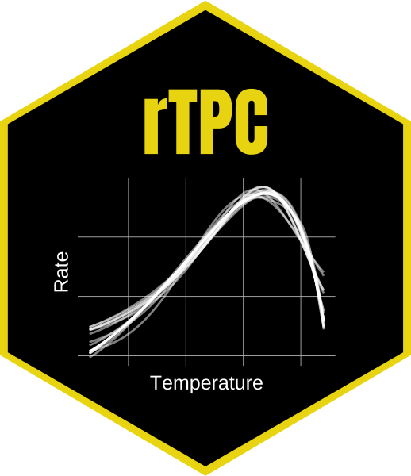
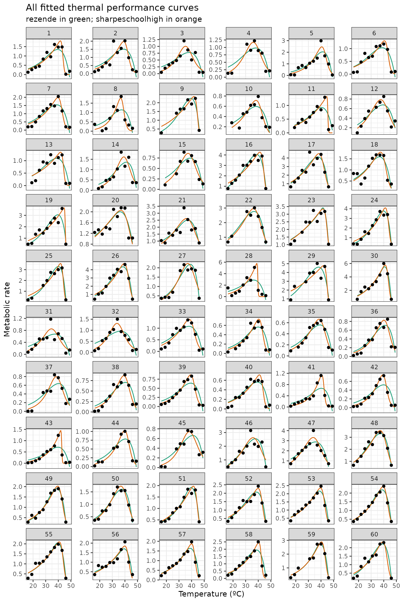

Parallelising rTPC
Daniel Padfield
2025-10-10
Source:vignettes/quickfit_parallel.Rmd
quickfit_parallel.RmdA brief example of how to parallelise fitting many models to many TPCs using rTPC, nls.multstart the tidyverse, and mirai.
Things to consider
- quickfit_tpc_multi() makes assumptions about start values and currently does not support functions where you have to specify a reference temperature (e.g. sharpe_schoolfield_1981()). This is by design because you should think hard about the fitting process and writing your own functions will help you understand the process.
- We recommend writing your own functions for fitting models to pass to purrr.
# load in packages
library(rTPC)
library(nls.multstart)
library(broom)
library(tidyverse)
library(mirai)
# load in data
data('chlorella_tpc')
d <- chlorella_tpc
head(d)
#> curve_id growth_temp process flux temp rate
#> 1 1 20 acclimation respiration 16 0.1271258
#> 2 1 20 acclimation respiration 19 0.2659680
#> 3 1 20 acclimation respiration 22 0.3851324
#> 4 1 20 acclimation respiration 25 0.4518357
#> 5 1 20 acclimation respiration 28 0.8335710
#> 6 1 20 acclimation respiration 31 1.1903413In our previous vignettes, we have shown how to fit many models to many curves using rTPC, nls.multstart(), and the tidyverse. However, as your datasets get larger (e.g. tens, hundreds, or thousands of TPCs) this could take a long time to run.
Excitingly, purrr now supports parallelisation when combined with mirai. This is the reason why we recommend using a single purrr::map() call that encompasses all models, as it integrates much better with mirai and allows for parallelisation.
Even more excitingly, we have functions in rTPC that allow you to easily fit one - quickfit_tpc() - or multiple - quickfit_multi_tpcs(). These functions make some assumptions about the start values and are not as customisable as each individual function, so we still recommend writing your own functions, but these are super useful if you want a quick idea of a few curves. Hats off to Francis Windram for the amazing additions. We will use them here to demonstrate how to parallelise fitting many models to many curves.
We will fit 5 models to all 60 TPCs in chlorella_tpc,
demonstrating how quickfit_multi_tpcs() can be used
with and purrr::map(), and how curve fitting can be
sped up by parallelising using mirai. To switch things
up, the models we will fit are briereextended_2021,
gaussianmodified_2006, briere1simplified_1999,
tomlinsonphillips_2015, and lactin2_1995.
quickfit_tpc_multi() without parallelisation
Firstly without parallelisation. We will time how long each method takes. In quickfit_tpc_multi(), you can pass model specific arguments by using a list. For example, here we pass different numbers of iterations for each model, and mix a shotgun approach with a gridstart approach between models. This could be useful if you know some models are harder to fit than others.
# start timer
no_parallel_start <- Sys.time()
# fit multiple models to multiple curves
d_mods_nopara <- d %>%
tidyr::nest(data = c(temp, rate)) %>%
dplyr::mutate(
mods = purrr::map(
data,
~ quickfit_tpc_multi(
data = .x,
c(
"briereextended_2021",
"gaussianmodified_2006",
"briere1simplified_1999",
"tomlinsonphillips_2015",
'lactin2_1995'
),
"temp",
"rate",
iter = list(150, 150, c(4, 4, 4), 150, 200),
lhstype = 'random'
),
.progress = TRUE
)
) %>%
tidyr::unnest(mods)
# end timer
no_parallel_end <- Sys.time()#> ██████████████████████████████ 100% | ETA: 0squickfit_tpc_multi() with parallelisation
And now with parallelisation, which you can read more about in the purrr documentation. How and where parallelisation occurs is determined by mirai::daemons() that sets up daemons (persistent background processes that receive parallel computations) on your local machine or across the network.
# start timer
parallel_start <- Sys.time()
# start parallel session
daemons(3)
# fit models as before, but in parallel
d_mods_para <- d %>%
nest(data = c(temp, rate)) %>%
mutate(
mods = map(
data,
in_parallel(
\(x) {
library(rTPC)
quickfit_tpc_multi(
data = x,
c(
"briereextended_2021",
"gaussianmodified_2006",
"briere1simplified_1999",
"tomlinsonphillips_2015",
'lactin2_1995'
),
"temp",
"rate",
iter = list(150, 150, c(4, 4, 4), 150, 200),
lhstype = 'random'
)
}
),
.progress = TRUE
)
) %>%
tidyr::unnest(mods)
# close parallel session
daemons(0)
# end time of parallel
parallel_end <- Sys.time()#> ██████████████████████████████ 100% | ETA: 0sThe non parallel code took 74 seconds, whereas the parallel code took 36 seconds, which is 2.1 times faster. That is a serious speed up!
The model fitting is likely to be the most time consuming part of the pipeline, so it is unlikely you will need to parallelise any of the other parts.
We can have a look at both objects to see that they are the same.
# look at colnames
colnames(d_mods_nopara)
#> [1] "curve_id" "growth_temp" "process"
#> [4] "flux" "data" "briereextended_2021"
#> [7] "gaussianmodified_2006" "briere1simplified_1999" "tomlinsonphillips_2015"
#> [10] "lactin2_1995"
colnames(d_mods_para)
#> [1] "curve_id" "growth_temp" "process"
#> [4] "flux" "data" "briereextended_2021"
#> [7] "gaussianmodified_2006" "briere1simplified_1999" "tomlinsonphillips_2015"
#> [10] "lactin2_1995"
# look at first six rows
head(d_mods_nopara)
#> # A tibble: 6 × 10
#> curve_id growth_temp process flux data briereextended_2021
#> <dbl> <dbl> <chr> <chr> <list> <list>
#> 1 1 20 acclimation respiration <tibble> <nls>
#> 2 2 20 acclimation respiration <tibble> <nls>
#> 3 3 23 acclimation respiration <tibble> <nls>
#> 4 4 27 acclimation respiration <tibble> <nls>
#> 5 5 27 acclimation respiration <tibble> <nls>
#> 6 6 30 acclimation respiration <tibble> <nls>
#> # ℹ 4 more variables: gaussianmodified_2006 <list>,
#> # briere1simplified_1999 <list>, tomlinsonphillips_2015 <list>,
#> # lactin2_1995 <list>
head(d_mods_para)
#> # A tibble: 6 × 10
#> curve_id growth_temp process flux data briereextended_2021
#> <dbl> <dbl> <chr> <chr> <list> <list>
#> 1 1 20 acclimation respiration <tibble> <nls>
#> 2 2 20 acclimation respiration <tibble> <nls>
#> 3 3 23 acclimation respiration <tibble> <nls>
#> 4 4 27 acclimation respiration <tibble> <nls>
#> 5 5 27 acclimation respiration <tibble> <nls>
#> 6 6 30 acclimation respiration <tibble> <nls>
#> # ℹ 4 more variables: gaussianmodified_2006 <list>,
#> # briere1simplified_1999 <list>, tomlinsonphillips_2015 <list>,
#> # lactin2_1995 <list>Custom rTPC parallelisation
As we said, quickfit_tpc_multi() makes some assumptions about start values and the fitting process, so we still recommend writing your own functions.
Here is an example of how to do this using
nls_multstart() and purrr with
parallelisation. We will fit sharpeschoolhigh_1981()
and rezende_2019(). The overall structure is similar to
we have used in vignette("fit_many_models") and
vignette("fit_many_curves").
The key difference when making things parallel is you need to specify where every function inside your custom function come from using :: (for example nls.multstart::nls_multstart().
# write a function to fit the five models and output a tibble
fit_TPCs <- function(d, ...) {
rezende <- nls.multstart::nls_multstart(
rate ~ rTPC::rezende_2019(temp = temp, q10, a, b, c),
data = d,
iter = c(4, 4, 4, 4),
start_lower = rTPC::get_start_vals(
d$temp,
d$rate,
model_name = 'rezende_2019'
) -
10,
start_upper = rTPC::get_start_vals(
d$temp,
d$rate,
model_name = 'rezende_2019'
) +
10,
lower = rTPC::get_lower_lims(d$temp, d$rate, model_name = 'rezende_2019'),
upper = rTPC::get_upper_lims(d$temp, d$rate, model_name = 'rezende_2019'),
supp_errors = 'Y',
convergence_count = FALSE,
...
)
sharpeschoolhigh <- nls.multstart::nls_multstart(
rate ~
rTPC::sharpeschoolhigh_1981(temp = temp, r_tref, e, eh, th, tref = 15),
data = d,
iter = c(4, 4, 4, 4),
start_lower = rTPC::get_start_vals(
d$temp,
d$rate,
model_name = 'sharpeschoolhigh_1981'
) -
10,
start_upper = rTPC::get_start_vals(
d$temp,
d$rate,
model_name = 'sharpeschoolhigh_1981'
) +
10,
lower = rTPC::get_lower_lims(
d$temp,
d$rate,
model_name = 'sharpeschoolhigh_1981'
),
upper = rTPC::get_upper_lims(
d$temp,
d$rate,
model_name = 'sharpeschoolhigh_1981'
),
supp_errors = 'Y',
convergence_count = FALSE,
...
)
return(tibble::tibble(
rezende = list(rezende),
sharpeschoolhigh = list(sharpeschoolhigh)
))
}
# start timer
custom_parallel_start <- Sys.time()
# start parallel session
daemons(3)
# fit models
d_fits <- d %>%
nest(data = c(temp, rate)) %>%
mutate(
mods = map(
data,
in_parallel(
\(x) {
fit_TPCs(d = x)
},
fit_TPCs = fit_TPCs
),
.progress = TRUE
)
) %>%
tidyr::unnest(mods)
# close parallel session
daemons(0)
# end time of parallel
custom_parallel_end <- Sys.time()#> ██████████████████████████████ 100% | ETA: 0sThis code took 53.63 seconds to run. We can then plot all the curves as done in previous vignettes.
# create new list column of for high resolution data
d_preds <- mutate(
d_fits,
new_data = map(
data,
~ tibble(temp = seq(min(.x$temp), max(.x$temp), length.out = 100))
)
) %>%
# get rid of original data column
select(., -data) %>%
# stack models into a single column, with an id column for model_name
pivot_longer(
.,
names_to = 'model_name',
values_to = 'fit',
c(rezende, sharpeschoolhigh)
) %>%
# create new list column containing the predictions
# this uses both fit and new_data list columns
mutate(preds = map2(fit, new_data, ~ augment(.x, newdata = .y))) %>%
# select only the columns we want to keep
select(curve_id, growth_temp, process, flux, model_name, preds) %>%
# unlist the preds list column
unnest(preds)
glimpse(d_preds)
#> Rows: 12,000
#> Columns: 7
#> $ curve_id <dbl> 1, 1, 1, 1, 1, 1, 1, 1, 1, 1, 1, 1, 1, 1, 1, 1, 1, 1, 1, 1…
#> $ growth_temp <dbl> 20, 20, 20, 20, 20, 20, 20, 20, 20, 20, 20, 20, 20, 20, 20…
#> $ process <chr> "acclimation", "acclimation", "acclimation", "acclimation"…
#> $ flux <chr> "respiration", "respiration", "respiration", "respiration"…
#> $ model_name <chr> "rezende", "rezende", "rezende", "rezende", "rezende", "re…
#> $ temp <dbl> 16.00000, 16.33333, 16.66667, 17.00000, 17.33333, 17.66667…
#> $ .fitted <dbl> 0.3090878, 0.3172922, 0.3257144, 0.3343602, 0.3432355, 0.3…We can the plot the predictions of each curve using ggplot2.
# plot
ggplot(d_preds) +
geom_line(aes(temp, .fitted, col = model_name)) +
geom_point(aes(temp, rate), d) +
facet_wrap(~curve_id, scales = 'free_y', ncol = 6) +
theme_bw() +
theme(legend.position = 'none') +
scale_color_brewer(type = 'qual', palette = 2) +
labs(
x = 'Temperature (ºC)',
y = 'Metabolic rate',
title = 'All fitted thermal performance curves',
subtitle = 'rezende in green; sharpeschoolhigh in orange'
)